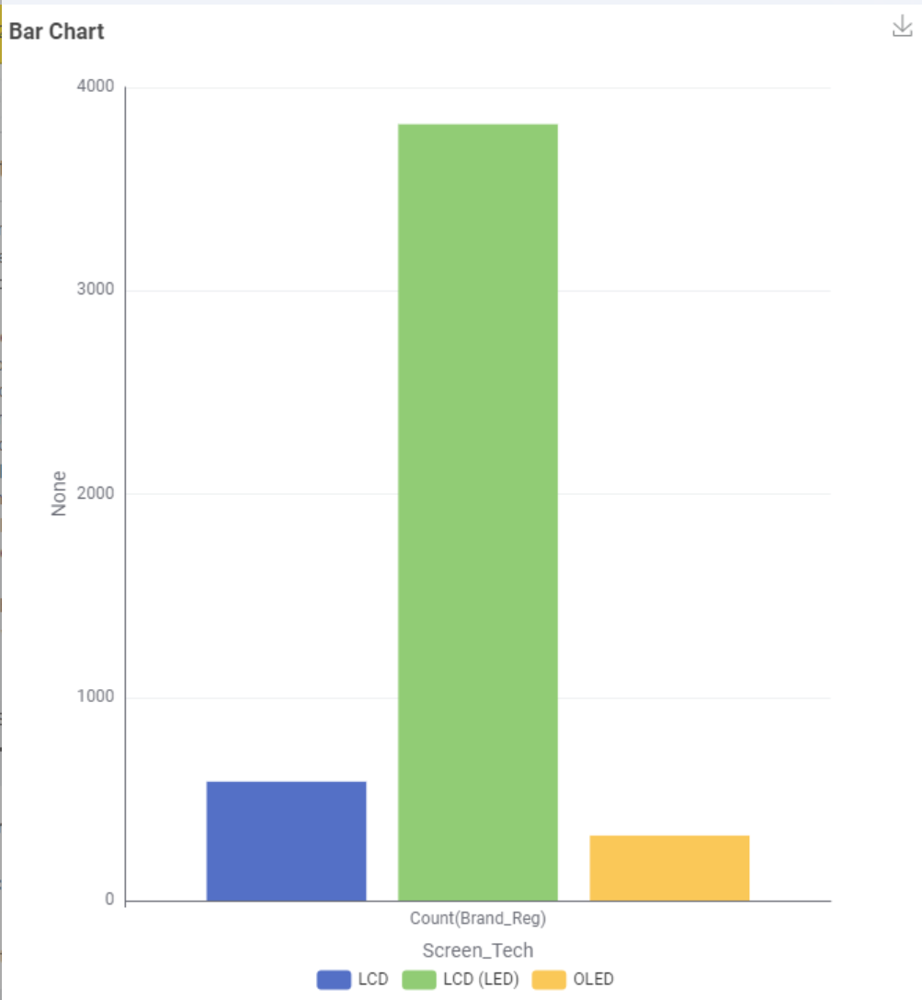

Energy Consumption Impact of Television Size
Issue
When choosing a new TV, consumers have many different options. However, not every screen technology is equally available. This could make it difficult for consumers who specifically want an OLED TV to find a suitable choice.
Demonstration

We can see this difference clearly in the bar chart. LCD (LED) has by far the largest number of records, at around 3,800. LCD has around 600, while OLED has only around 300
- Key Points:
- LCD (LED): ~3,800
- OLED: ~300
- LCD: ~600
Ideas for Overcoming the Issue
One possible solution is to create a simple TV comparison guide. The guide could explain the differences between LCD, LCD (LED), and OLED, including their advantages, disadvantages and typical use cases.
| Technology | Explanation |
|---|---|
| LCD | Older/common display technology |
| LCD(LED) | LCD using LED backlighting |
| OLED | Each pixel produces its own light |
Note: The goal isn't to make OLED more popular. The goal is to help consumers understand their choices despite the difference in availability.
Solution: Online Buying Guide
We could create a simple online buying guide that compares the three technologies based on price, picture quality, energy consumption, and suitability for different users.
- Example:
- Lower cost → LCD/LCD (LED)
- Better picture quality → OLED
- Lower energy consumption → compare energy ratings
- Gaming → compare response time and refresh rate
Expected Results:
Consumers would be able to quickly identify which technology best matches their needs instead of choosing based only on the TV's brand or appearance.
Recommendations
I recommend creating a simple online comparison guide because it is inexpensive, easy to develop, and can help consumers make more informed decisions.